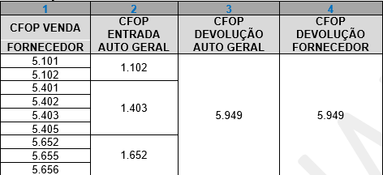
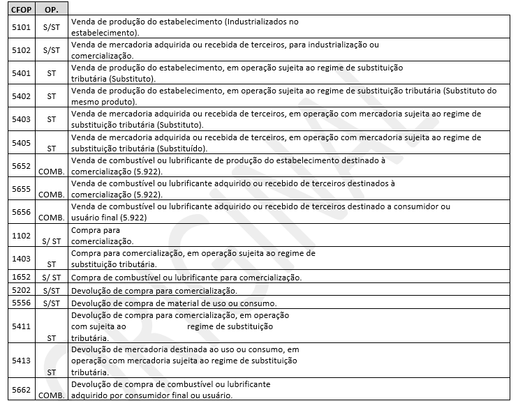
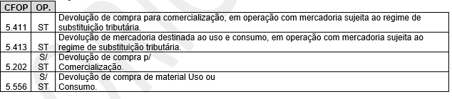

Formulário
Devolução de Fornecedores
NOTA FISCAL DE DEVOLUÇÃO PARA FORNECEDOR PROMOVIDA POR CONTRIBUINTE
DEVOLUÇÃO EM VIRTUDE DE GARANTIA.


Quando o fornecedor, depois da análise técnica com laudo, detecta que foi defeito da peça e fica com a mercadoria e dá crédito para a Auto Geral, ou, fica com a mercadoria e nos devolve em dinheiro, devido aos boletos já pagos.

Esse procedimento, de retorno de garantia, realizado pelo fornecedor, faz com que a operação seja finalizada fiscalmente.
Após essa operação de retorno de garantia feita pelo fornecedor, a Auto Geral emite uma nova nota, mas agora, de devolução.

DEVOLUÇÃO DE COMPRA PARA O FORNECEDOR
NOTA FISCAL DE DEVOLUÇÃO PARA FORNECEDOR PROMOVIDA POR CONTRIBUINTE (Auto Geral):